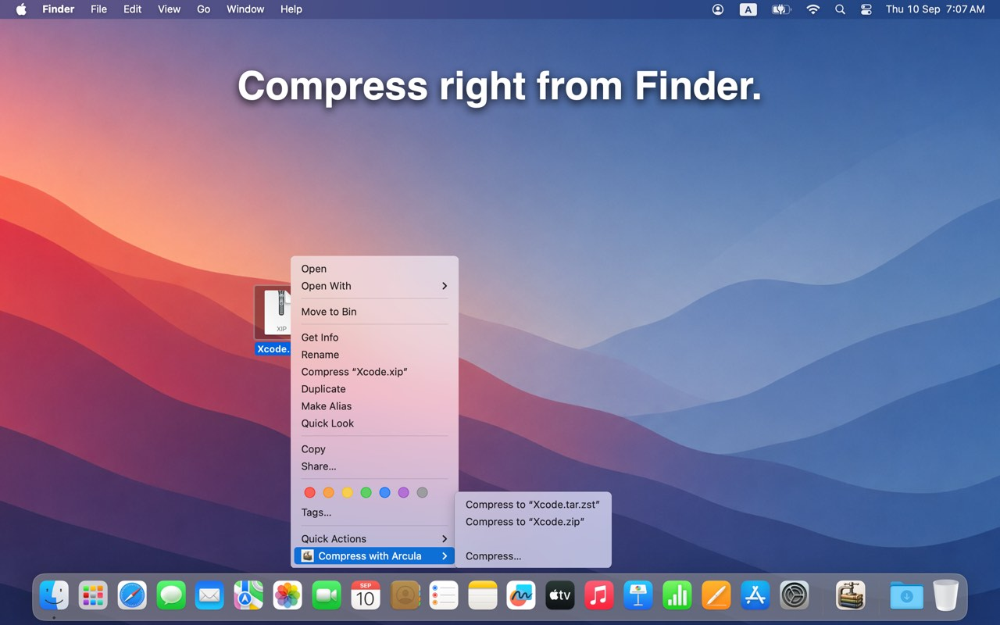
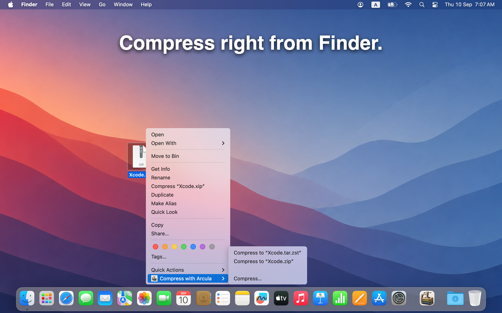

Compress right from Finder.
Right-click a file or folder and choose Compress with Arcula. Pick fast TAR.ZST when you want speed, or ZIP when you need broad compatibility.
No need to open a separate window first — the Finder extension does the job where you already work.

